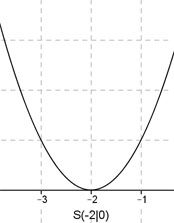

Aufgabe 34 Welche Funktion y = (x - d)2 hat ihren Scheitelpunkt bei (-2|0)? y = (x – d)2 Dies ist die Scheitelpunktform einer quadratischen Funktion, deren Scheitelpunkt bei (d|0) liegt. Wenn d = -2 sein soll, lautet die gesuchte Funktionsgleichung y = (x-(-2))2 = (x + 2)2 